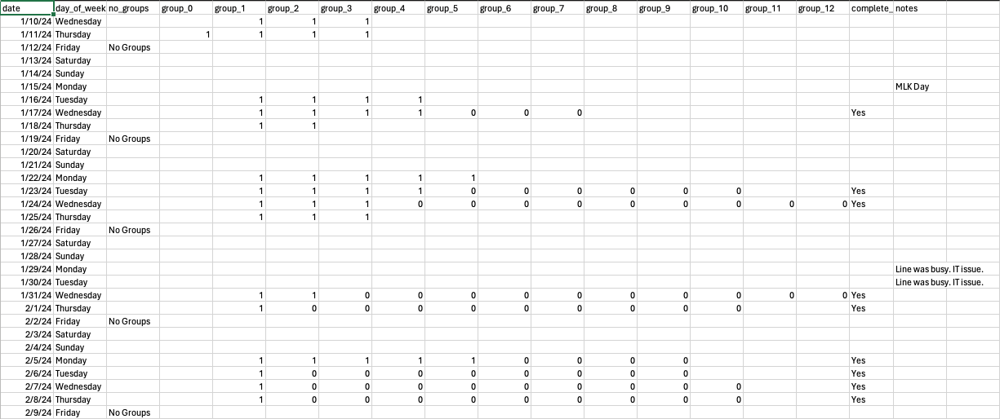
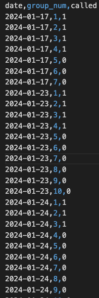
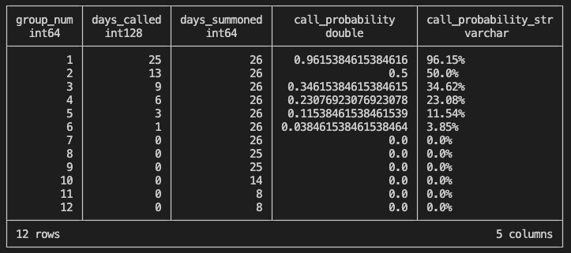
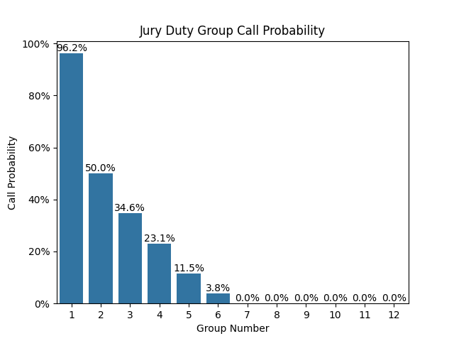
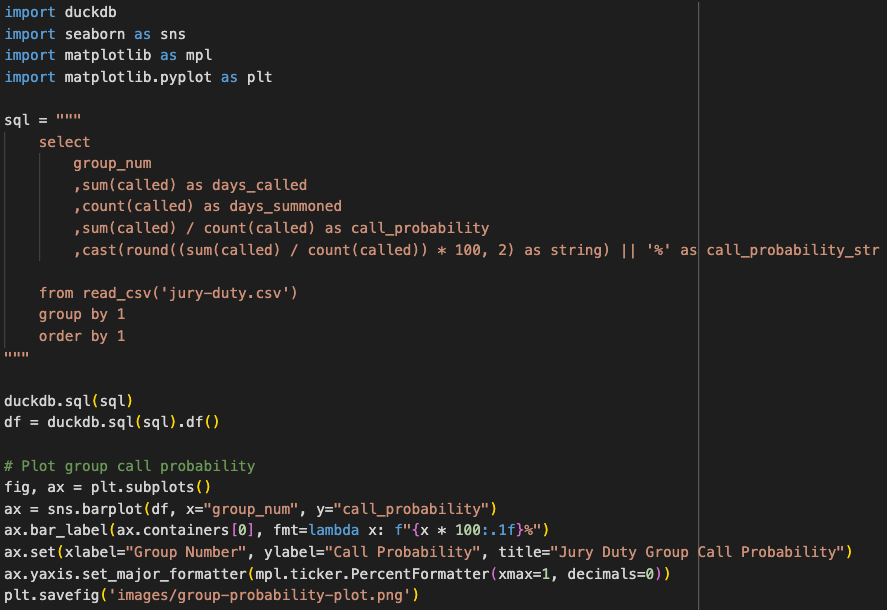

2024-03-22
A couple months ago I received a jury summons, the third year in a row. Each time it happens, I feel a slight sense of dread due to all the unknowns. Will I have to go in? I won't know until calling in the night before. I was assigned to Group 5, which I thought was less likely to be called, but I really wasn't sure how likely. I set about collecting some data to determine my probability of getting called in in the future.
Where I live, jury duty summonses are group-based. The night before a given day that you are summmoned, you call in to find out if your jury duty group needs to show up the next day.
I'm a big fan of Tidy Data principles, but even after using tidy data principles for years, it's still natural for the mind to gravitate towards a structure that is easier to read, but nonetheless messy.
Below is the initial data structure I started with. It quickly became apparent that a tidier format would be easier to work with, and I didn't really need to record notes and days when no groups were called.
After converting to a tidier format, the data looks like this. There is a record for each day that each group was summoned and a flag that records whether or not the summoned group is actually called to come in person.
I've recorded most days that jury duty groups were summoned so far in 2024. The missing dates are weekends, holidays, weekdays where no groups are called, days where it's not clear which groups were summoned but not called, days where the jury services' phone line was down to due IT issues, or (to be honest) days that I missed recording due to vacation 🏖️.
It turns out my intuition was correct that Group 5 was less likely to be called in!
  